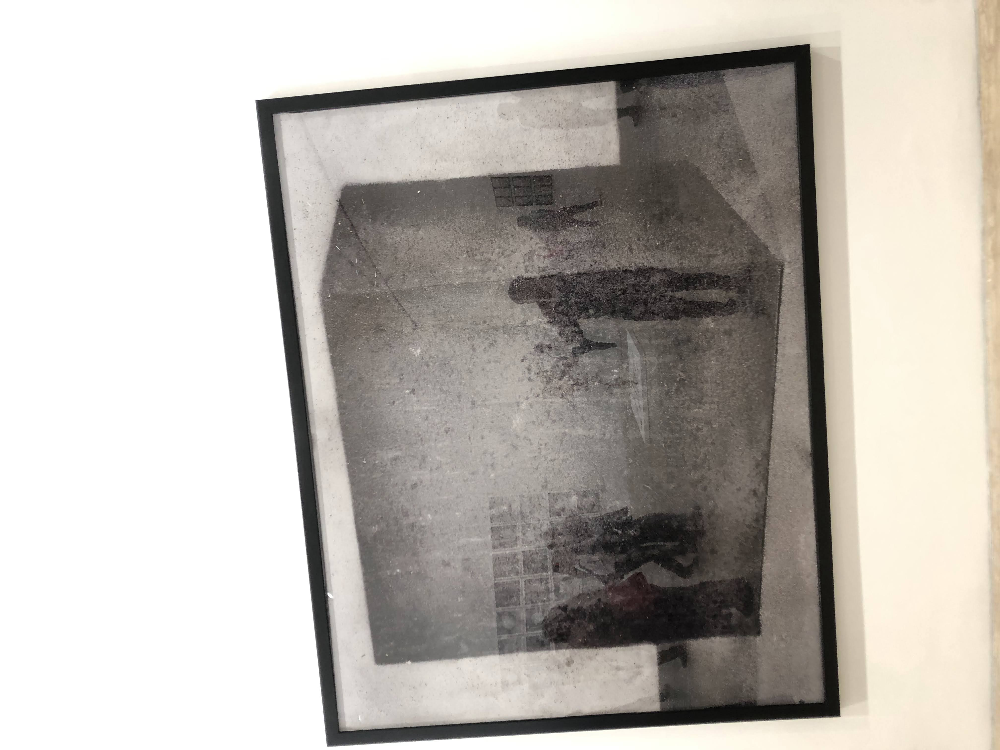
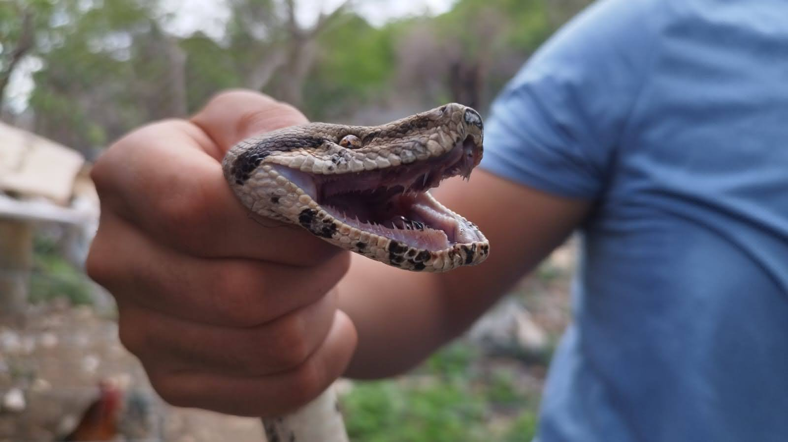

A menudo pensamos que para cambiar nuestra vida tenemos que pensar en hacer cambios
grandes. Nada más lejos de la realidad. Según el reconocido experto en hábitos James
Clear, e cambio real proviene del resultado de cientos de pequeñas decisiones.
Clear llama a estas decisiones "hábitos atómicos": tan pequeños como una partícula,
pero tan poderosos como un tsunami.
El caballero de la armadura oxidada
La historia sigue a un caballero que vive obsesionado con su armadura, la cual simboliza
su ego y sus miedos. Él cree que esta armadura lo hace invulnerable y lo protege de cualquier
daño emocional. Sin embargo, al pasar tanto tiempo en ella, se oxida y el caballero queda
atrapado dentro, incapaz de quitársela.
Inteligencia Emocional
Un libro muy bueno para encontrar esas explicaciones de tus reacciones ante ciertas situaciones,
te ayudará a entender cómo mejorar como persona,cómo tener fortaleza mental, te ayudará a invertir en ti
desarrollando hábitos saludables, aumentando tu confianza, autoestima, disciplina y gestionar las emociones
convirtiendo el pensamiento negativo en positivo.
Películas
Golpe Bajo
Cuando una ex estrella de futbol, Paul Crewe termina en la cárcel tras un incidente de tránsito por
conducir ebrio, se convierte en el centro de un singular plan orquestado por el hipócrita alcaide
para entrenar al personal de la prisión.
(4 estrellas)
Top Gun: Maverick
Después de más de 30 años coom uno de los mejores aviadores de la Marina, Maverick entrena a un grupo
de graduados de Top Gun para una misión compleja y peligrosa.
Reparto:
Tom Cruise
Miles Teller
Jennifer Connelly
Jon Hamm
Sociedad de la nieve
La nueva película de Juan Antonio Bayona retrata la tragedia de unos jugadores de rugby uruguayos
cuyo avión se estrelló en los Andes en 1972 dejándonos a merced de la naturaleza. Esta pieza
cinematográfica te deja enseñanzas de la importancia de la amistad, y que el ser humano está dispuesto
a pasar los límites morales con tal de sobrevivir.
Lugares visitados
Rancho Cerro Nuevo Iguala Guerrero
Iguala, oficialmente llamada Iguala de la Independencia, es una ciudad de México ubicada en la región Norte del estado de Guerrero, a 190 km de la Ciudad de México. Es cabecera del municipio homónimo y se encuentra en un valle rodeado por nueve montañas. En sus ranchos encontrarás con vacas, puercos, pollos, aves, entre otros animales, donde son críados al libre pastoreo. Se disfruta de una experiencia única y te permite conectar con la naturaleza.
Jumex, exposicion de arte abstracto
El Museo Jumex es un museo ubicado en Polanco, Ciudad de México. Está enfocado en arte conteporáneo y la exhibición de la Collección Júmex. Fue inaugurado el 19 de noviembre de 2013 y espera que reciba 300 000 visitantes al año. Una experiencia divertida, debes de apreciar el arte abstracto, una forma de expresión de sentimientos artísticos que prescinde de toda figuración y propone una nueva realidad distinta a la natural.

Estadio Azul
El Estadio de la Ciudad de los Deportes es un recinto deportivo ubicado en la CDMX, que tiene una capacidad para 36 681 personas. Fue diseñado por el ingeniero Modesto C.Rolland. Cruz azul derrotó a San Luis para ligar su cuarta victoria del torneo, derrotando de forma contundente 3-0 al Atlético de San Luis en partido de la jornada 6 del torneo Clausura 2024.
Busqueda de animales
Mazacuata
Serpiente vivípara de 1.75 metros de longitus, de cabeza triángular y cuerpo grueso, en el que predomina el color canela, con el vientre blanco y con grandes manchas en varios tonos de marrón, que se vuelven rojizas hacia la parte de la cola. Encontrada atorada en una cerca, lamentablente ya no se encontraba con signos vitales.

Culebra ratonera
Es una especie que no representa ninguna amenaza para el ser humano. Comúnmente sale por las tardes y noches para alimentarse de roedores, insectos y otras especies pequeñas.
Gavilán de monte
Encontrado de cría en las montañas, mantenido para su curación de su ala durante 3 semanas, posteriormente liberado donde fue encontrado.